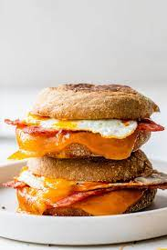

Breakfast Sandwich

Description
This breakfast sandwich recipe is simple, tasty, and fast. This recipe is also very flexible with what you may have lying around in your kitchen.
At its core it is some type of bread with a breakfast meat, eggs, and cheese. Though it may sound very plain it is indeed very delicous and worth a try.
Ingredients
- English muffin or bread of choice
Cheddar cheese
- Eggs
- Canadian bacon or substitute with breakfast meat of choice
- Butter
Steps
- Toast the english muffin in a toaster, toaster oven, or skillet. Then set aside with the cheese placed on the toasted muffin to melt
- Cook canadian bacon in a saucepan with medium heat for a couple minutes on each side. Then set on the toasted english muffin.
- Cook an over medium egg in the saucepan with butter at medium heat.
- Finish assembling the sandwich with the egg and enjoy